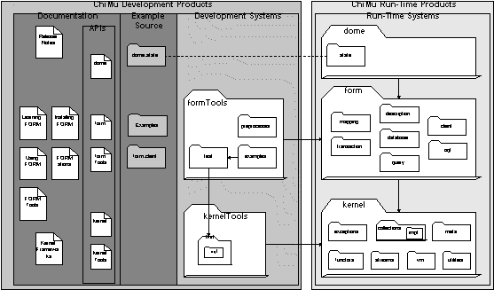

Previous TOC Next
Previous TOC Next 
| ChiMu Documentation Getting Started with FORM | Previous TOC Next |
The FORM product includes the following components:
FORM is a Java based product and all of FORM’s classes are packaged into two ‘jar’ files: ‘Form.jar’ and ‘FormTools.jar’. ‘Form.jar’ contains the main FORM functionality and will be required by your deployed application. ‘FormTools.jar’ contains classes that are development tools and can not be released with the deployed application. The two jar files together comprise the development environment for FORM and must be located in your Java classpath (or similar configuration for you development environment). FORM’s Jar files are located in ‘…/chimu/lib’.
FORM comes with manuals, supporting documentation, and Javadoc API documentation. The following list some of the documentation included with FORM:
All the documentation is in ‘…/chimu/docs/’. The manuals and supporting documentation is in PDF format and HTML format [Some HTML versions are currently not included]. The Javadoc API is in ‘…/chimu/docs/api/’ in HTML format.
FORM is distributed with multiple example programs that demonstrate using FORM. These programs are located in ‘…/chimu/examples/form’ and setting up and running these examples is discussed in a later chapter.
Besides the Example source code, the FORM standard distribution includes source to some of FORM’s functionality that you may want to modify. The source code is included in the directory ‘…/chimu/src’ under the ‘COM/chimu/’ subdirectory. See your licensing agreement for restrictions on source use and alteration.
The FORM distribution includes shell/batch programs to simplify the command line typing when using FORM tools. These are only convenience programs which call the Java VM to do all the work. The batch programs currently include:
|
FormVersion |
Prints the version numbers of the FORM subsystems. |
|
FormDatabaseTester |
Logs into the database and runs examples and tests. |
|
FormPreprocessor |
Runs the FORM Preprocessor |
See the FORM Tools manual for more information on this functionality.
Summarizing the above, FORM’s components are placed in the following locations:
|
…/chimu/bin |
Shell/Batch files |
|
…/chimu/docs |
Documentation |
|
…/chimu/docs/api |
API Javadoc |
|
…/chimu/examples/form |
Examples |
|
…/chimu/lib |
JAR files |
|
…/chimu/src |
Included Source |
Collecting most of the pieces of FORM into a single diagram looks like this:

 |
Previous TOC Next | |
| Copyright (c) 1997, ChiMu Corporation. All Rights Reserved.
Confidential and Proprietary. Version R1.0.1. |